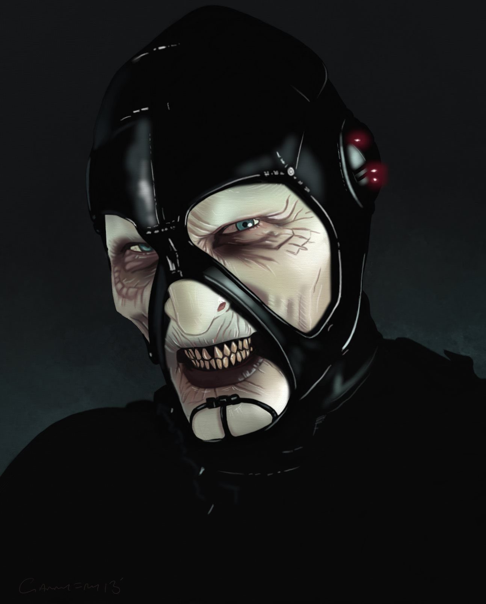
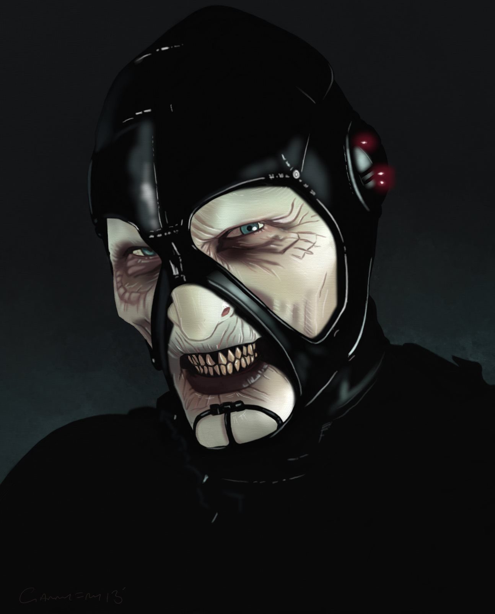
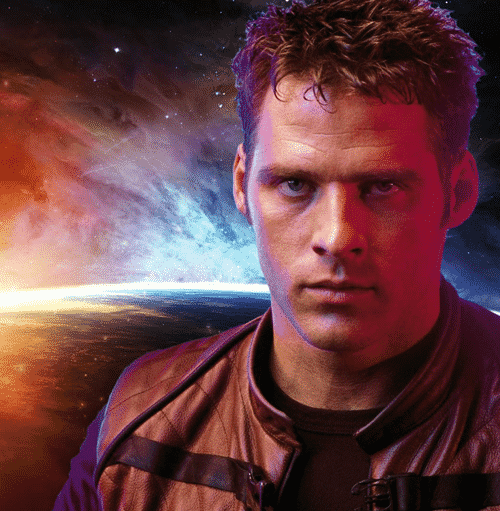
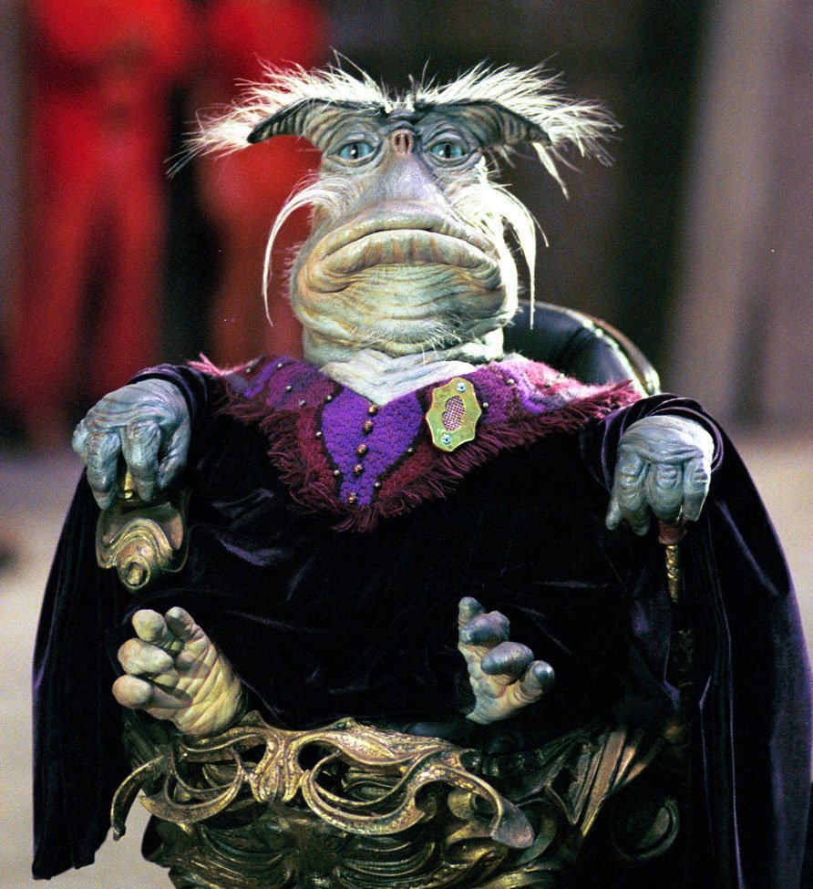
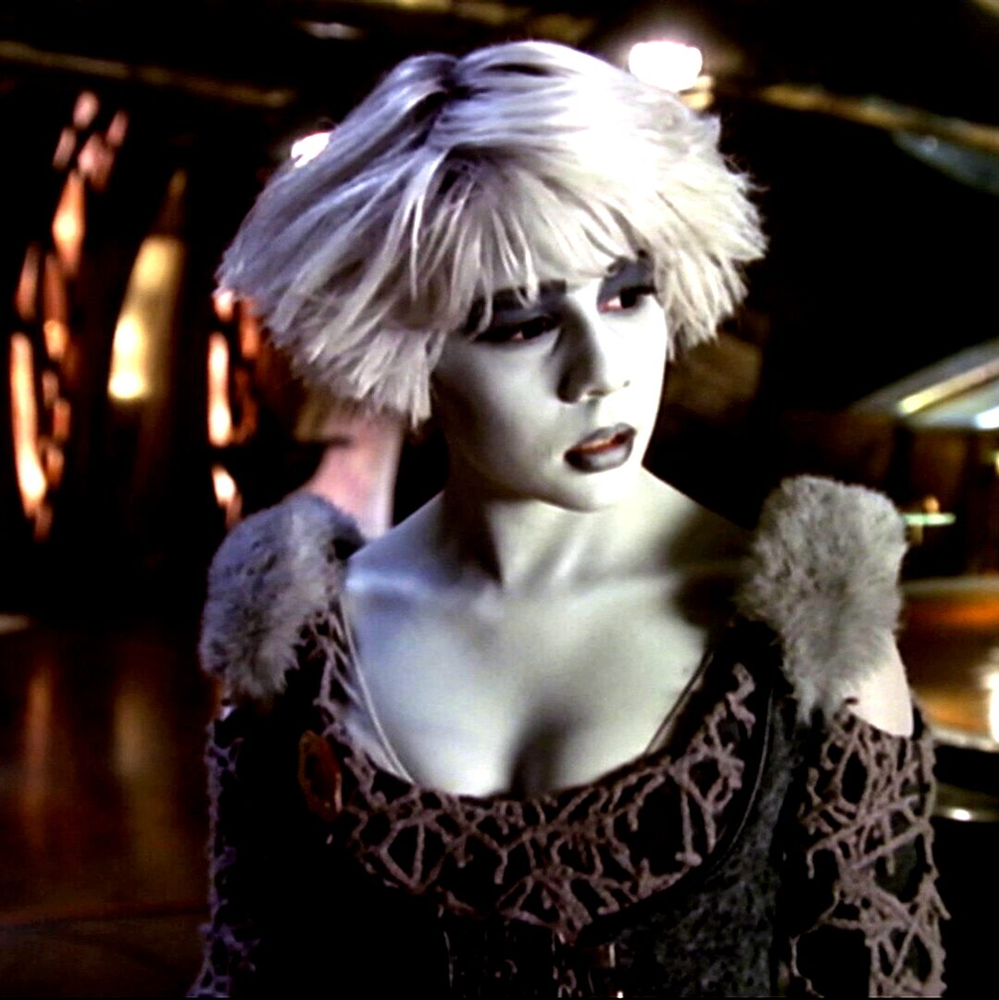
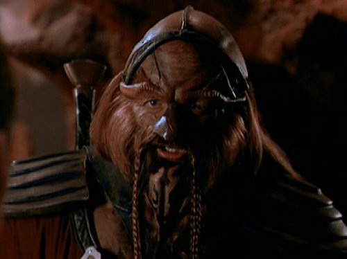
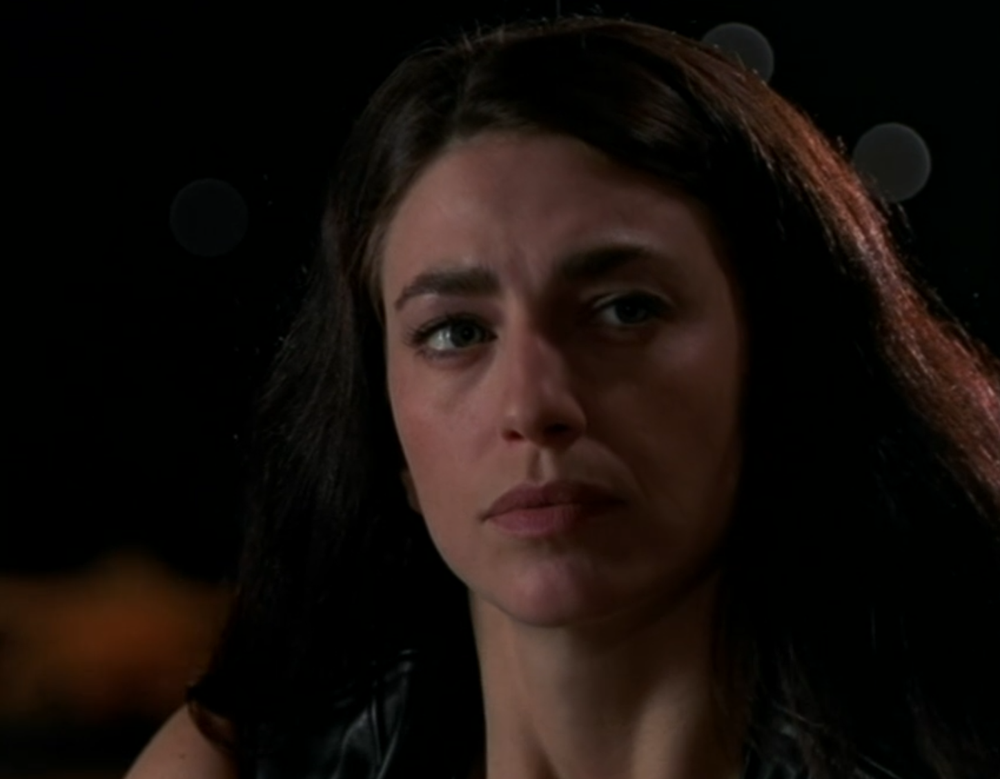

Scorpius
A multi-dimensional villain with complex motivations and a deep history. Pragmatic, resourceful and ruthless, he will stop at nothing to get what he wants.
Crazy aliens, bizarre characters and ludicrous space adventures
Farscape is a science fiction television show that chronicles the adventures of Commander John Crichton, an astronaut who finds himself flung into the furthest reaches of the galaxy and embarks on an incredible journey involving many different alien species, a living ship, ruthless villains and much more.
During his many adventures and travels through space, John makes lots of new alien friends (as well as making many enemies). Below you will find a few brief profiles of the main characters depicted in this TV show. Simply hover over each character to read a little more about them.
A multi-dimensional villain with complex motivations and a deep history. Pragmatic, resourceful and ruthless, he will stop at nothing to get what he wants.
Commander John Crichton is Farscape's main protagonist. In a far away part of the galaxy, John finds himself at the centre of a series of incredible adventures.
Dominar Rygel the Sixteenth is a member of the Hynerian royalty. He was desposed in a coup by his cousin and imprisoned by the Peacekeepers for centuries.
Despite striving for inner peace, Zhaan's life has been marked by violence and trauma, yet she never wavers from her spiritual path, even during her imprisonment.
Chianna is on the run from a nefarious faction within her home planet. She seeks refuge with the rest of the crew which leads to a lot of chaos and mischief.
Tactical, unforgiving and highly disciplined is Crais. Born and raised as a peacekeeper, he grew to respect the force of authority and embraced his servitude.
A battle-scarred warrior, Dargo struggles to fight against his powerful rage, a rage born of past traumas. Years in captivity have only served to amplify his rage.
Like Crais, Aeryn was also born into military service and knows no other way. But after being betrayed for carrying out her duty, she id forced to re-examine her worldview.
